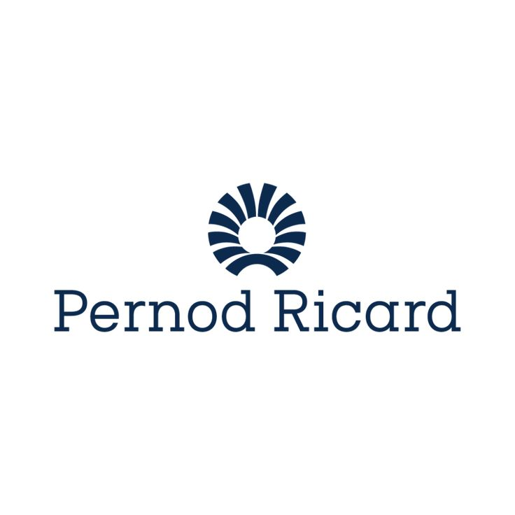
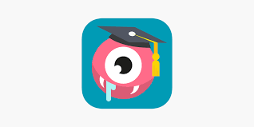
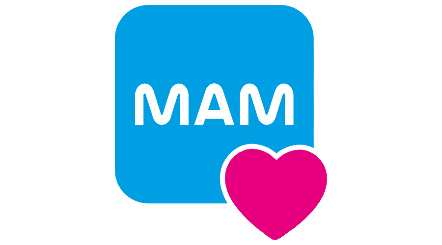
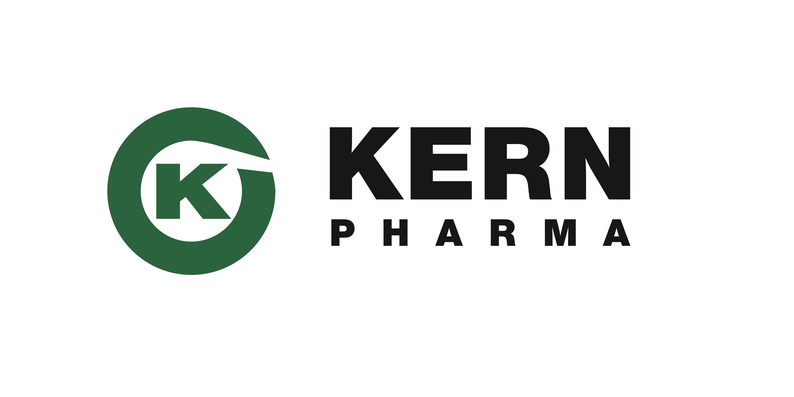
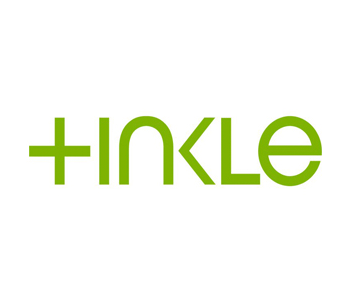

Digital Consultant · B2B SaaS & Consumer Brands Jul 2023 – Present · Barcelona
Prismic.io · Created ABM content like whitepapers, landing pages and newsletters 🎯. Focused on acquisition and helping the brand stand out in a crowded SaaS market.
Víntegris · Fixed and scaled the marketing database in HubSpot. Cleaned and structured thousands of leads, automated reports and built dashboards that gave sales and marketing real visibility 📊.
Proquinat · Led the digital rebrand of a 30-year-old industrial company, launching a new website, brand identity and sales assets. Produced SEO content, automated HubSpot lead reports and optimised the funnel to increase qualified industrial leads 🏭.
PlaqueOff (Animal oral health) · Designed and launched a content strategy for new product launches. Mixed SEO and organic social to grow awareness and educate pet owners 🐶.
 Drinks&Co Store · Mobile Marketing and Product Owner Dec 2021 – Jun 2023 · Barcelona
I worked on two apps in parallel 📱.
Bodeboca (consolidated app) · After a relaunch, sales through the app grew from 18% to 21% of total ecommerce revenue. I led the migration from outdated tech, defined the product vision, roadmap and positioning based on business needs and customer insights, and coordinated sales, marketing, design and development teams. Growth came from CRM with push campaigns, acquisition with Google UAC and Apple Search Ads, and refined messaging and ASO. Post-launch, I optimised performance by setting KPIs, tracking funnels in Appsflyer, running A/B tests on UX/UI and leading QA.
Drinks&Co (MVP stage) · Supported the go-to-market in five countries 🌍. Iterated quickly to fix bugs and add features. Implemented CRM flows, campaigns and event tracking, and worked on payments integration, UX/UI analysis and customer feedback loops. Collaborated closely with product, tech and marketing to move fast from MVP to a scalable product.
Tools: JIRA, GA4, Data Studio, Figma, SQL, Python, Firebase, Appsflyer, Batch, Splio.
 Academons · Mobile Marketing & Growth (EdTech · SaaS · Subscription App) May 2020 – Dec 2021 · Madrid
Joined a small EdTech startup right after COVID, with the goal of retaining users in a homeschooling app for primary students 👩🏫. Focused on boosting engagement, frequency of use and retention with in-app tactics like rewards calendars, gamification and personalised messages.
On the acquisition side, I designed and optimised campaigns in Meta Ads, Google Ads and Apple Search Ads, and tested alternative growth channels such as Telegram. I also worked with influencers (teachers and parents), created social content, and improved onboarding and CRM flows to raise conversion and keep users active.
 MAM Baby Spain · Digital Marketing Manager (FMCG · Healthcare) Jun 2018 – May 2020 · Barcelona
I was responsible for all digital marketing in Spain, covering both consumer campaigns and pharmacy partners 👶. I adapted the corporate website and the “MAM Brushy Time” app to the Spanish market, and managed the CMS to keep content updated. A highlight was growing the social media community by more than 50% organically through useful parenting content and collaborations with maternity and healthcare influencers.
I also managed Instagram and Facebook channels, produced newsletters, and ran digital campaigns with partners such as Mi Bebé y Yo. On the paid side, I supported launches with online ads, banners and email marketing. In addition, I created post-sale materials and graphic assets for pharmacy partners.
 Kern Pharma · Digital Marketing Manager (Healthcare · Pharma) Nov 2016 – May 2018 · Terrassa
I was part of the Communications department and managed all digital communication for three companies of the group 💊.
On the internal side, I managed the intranet for 1,500+ employees and internal communication screens.
On the external side, I defined and executed the content strategy for the web and blog, including copywriting, SEO and product positioning. I coordinated 15+ stakeholders to ensure brand consistency. A key achievement was ranking “ibuprofeno” on the first page of Google for several months.
As Project Manager, I directed the migration of four corporate websites to a new common technology (Liferay). This included stakeholder management, content migration, SEO for multiple countries, backlog management, QA collaboration and strict timelines. I also created technical documentation, product pages and user manuals.
This role positioned me as a bridge between communication, marketing and IT, reinforcing my skills in cross-functional leadership, KPIs, performance tracking and digital strategy.
 Brico Depôt Spain & Portugal · Digital Marketing Manager (Retail · DIY · Kingfisher Group) Apr 2015 – Oct 2016 · Barcelona
Brico Depôt Spain & Portugal · Digital Marketing Manager (Retail · DIY · Kingfisher Group) Apr 2015 – Oct 2016 · Barcelona
I led the company’s first steps into digital, bringing visibility to a retailer that was fully offline 🛠️.
The main goal was to launch a new website with a catalogue of 35,000+ SKUs across 28 stores, with images, descriptions and a blog. I defined the product strategy and roadmap, managed the API for mass product uploads, and coordinated stakeholders to ensure brand and marketing alignment within the Kingfisher Group.
On the marketing side, I designed the first digital marketing strategy, including content, email marketing, banners and performance campaigns. I managed a €200K annual paid media budget for brand and seasonal campaigns, and launched the first monthly online catalog with dynamic pricing per store.
I also set up performance frameworks and KPIs to measure results across channels. This role laid the foundations for the company’s digital transformation, enabling future ecommerce and omnichannel growth.
 Agencies (Tinkle & Territorio creativo) · Social Media & Digital Strategy Nov 2011 – Mar 2015 · Barcelona
I worked in agencies where I grew from community management to analytics and finally to strategy, covering B2B and B2C clients across FMCG, healthcare, energy, real estate and consumer goods 📢.
I launched the social media channels of DIA España, creating content, managing the community and setting up customer care flows. I also led the launch of Gas Natural Fenosa’s social media channels, integrating customer care into corporate systems with SLA response times of 30 minutes. For this project, I managed a 5-person team of community managers and designers.
I also worked on social listening and brand reputation using tools like Augure, managed content production (infographics, blog posts, videos, carousels), ran digital PR with bloggers and influencers, and designed social strategies for global clients.
Clients included: Gas Natural Fenosa, DIA España, Novartis, Danone, Nestlé Bebé, Reckitt Benckiser (Veet), Pastas Gallo, Font Vella, La Sirena, granini, Servihabitat, tommee tippee (UK), Gut Microbiota Worldwatch (UK). Achievements: ConSalud Award for the project Gut Microbiota Worldwatch 🏆.